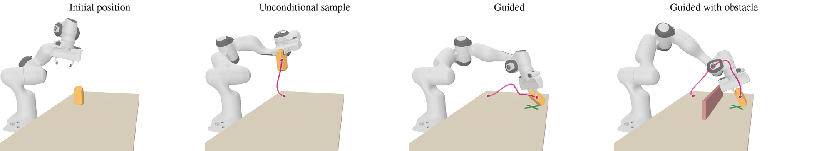
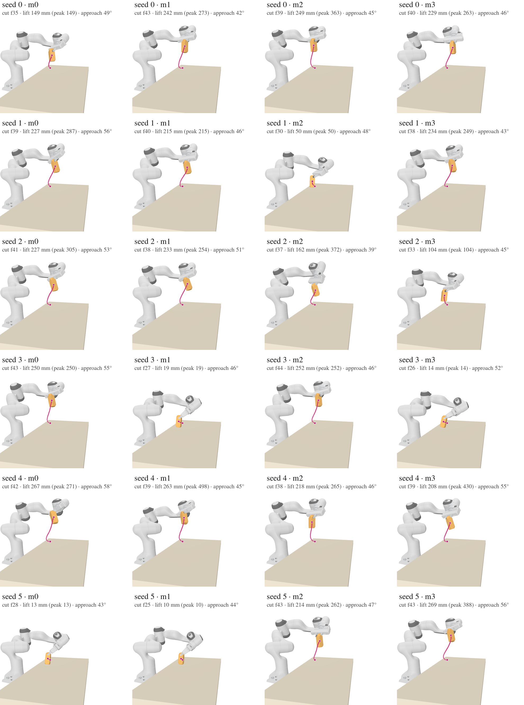
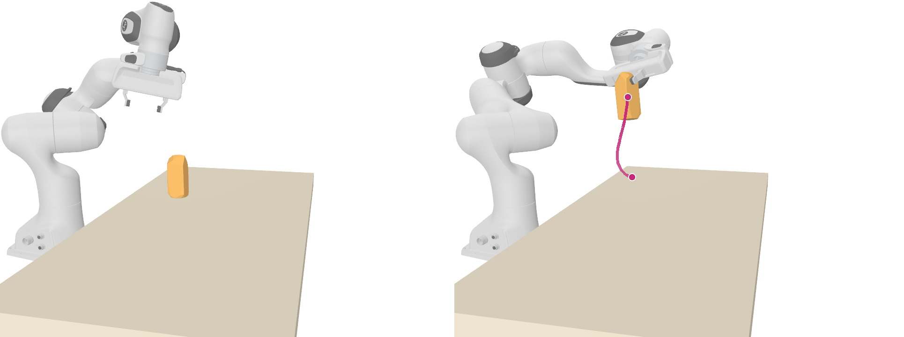
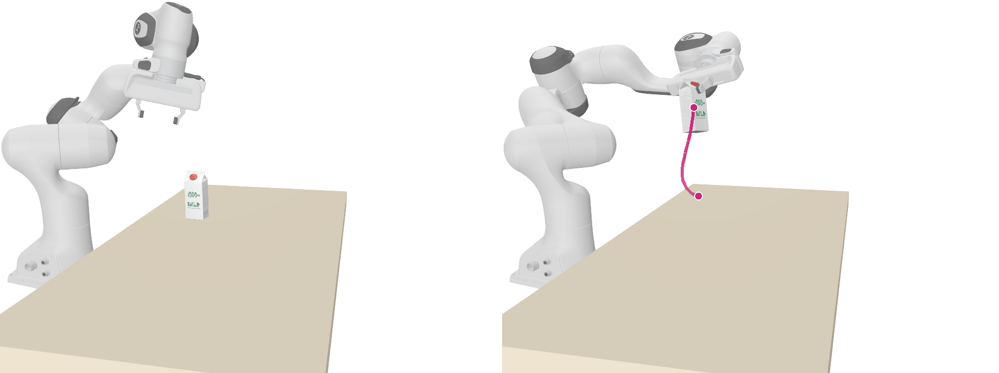
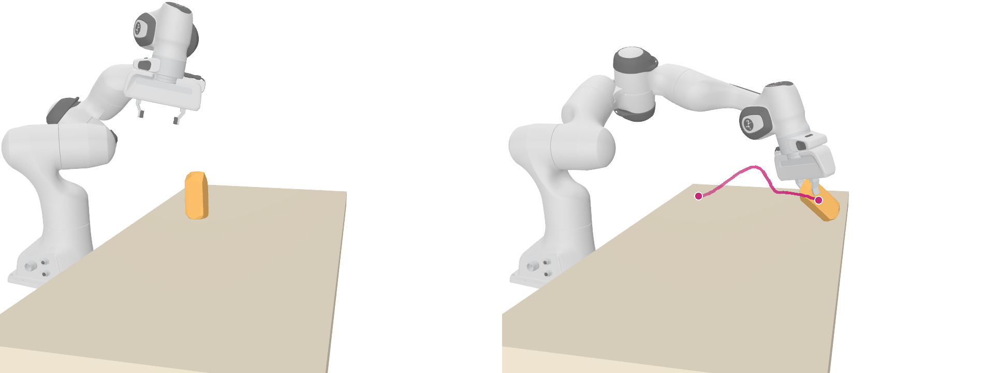
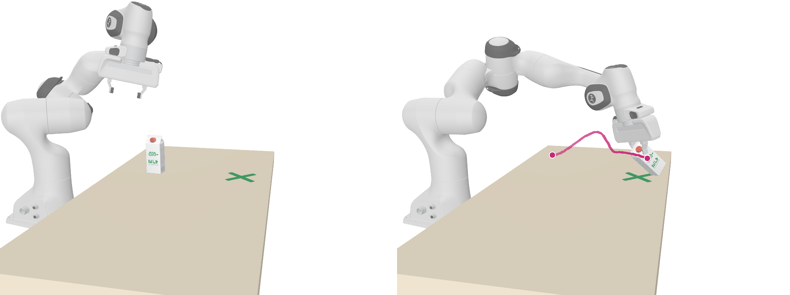
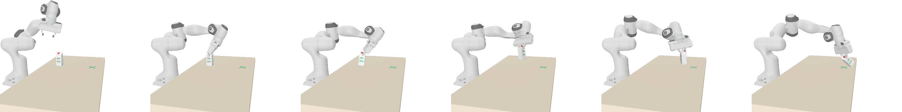
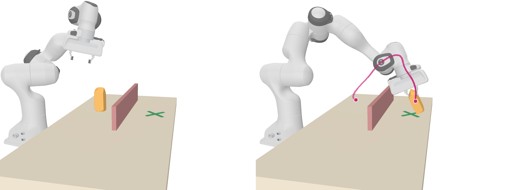
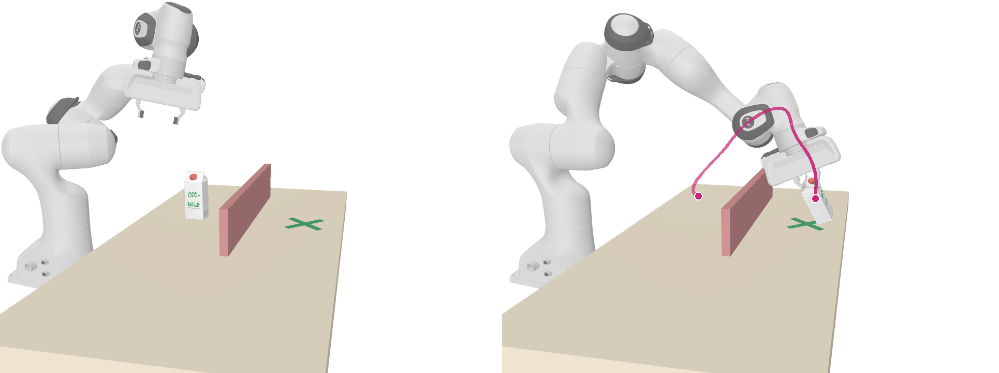
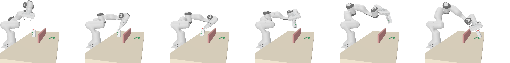

Isaac Lab replays with a fixed-base Franka driven by a controller (differential IK, damped least squares, into stiff PD joint drives with a joint-velocity feedforward) tracking the generated hand trajectory; binary gripper; the arm starts from the episode's recorded frame-0 joint configuration. Pickup-only checkpoint, milk carton #0037, start on the table; target = start + 30 cm in x on the ground. Two render styles of the same simulations: left, the carton as the convex hull of its particles (yellow) and the wall as a plain box (pink); right, the carton's own textured asset mesh (fitted to the frame-0 particles, 2.7 mm chamfer). The dark-green X on the table marks the target, drawn on the guided cases only. Rendered offline from the simulated link and object poses (pyrender/EGL). Same camera everywhere: eye (0.70, −1.10, 0.52) m, look-at (0.42, 0.20, 0.21) m in the base frame. The start | end images carry the carton centroid's smoothed path (Savitzky–Golay, 11 frames; dots = start and end).

site_armwall/panel/four_panel.png.Every unconditional draw of the pickup-only checkpoint from this start (seeds 0–5, 4 members each), each through the commanded-arm replay and rendered in the hull style. Each tile is cut at the LAST frame up to the carton's peak height at which the whole robot is still inside the image (14 px margin), so nothing is cut off; the pink path runs to that frame. Sorted by carton height at the cut. Click an id for the full-size tile.

| id | cut frame | lift at cut, mm | peak lift, mm | approach off vertical | sideways at cut, mm | hand err max, mm |
|---|---|---|---|---|---|---|
| seed5_m3 | 43 | 269 | 388 | 56° | 121 | 2.3 |
| seed4_m0 | 42 | 267 | 271 | 58° | 131 | 3.2 |
| seed4_m1 | 39 | 263 | 498 | 45° | 125 | 4.8 |
| seed3_m2 | 44 | 252 | 252 | 46° | 101 | 12.8 |
| seed3_m0 | 43 | 250 | 250 | 55° | 105 | 2.6 |
| seed0_m2 | 39 | 249 | 363 | 45° | 87 | 4.5 |
| seed0_m1 | 43 | 242 | 273 | 42° | 108 | 4.1 |
| seed1_m3 | 38 | 234 | 249 | 43° | 134 | 6.7 |
| seed2_m1 | 38 | 233 | 254 | 51° | 119 | 2.2 |
| seed0_m3 | 40 | 229 | 263 | 46° | 118 | 3.1 |
| seed1_m0 | 39 | 227 | 287 | 56° | 123 | 2.0 |
| seed2_m0 | 41 | 227 | 305 | 53° | 120 | 9.7 |
| seed4_m2 | 38 | 218 | 265 | 46° | 72 | 3.7 |
| seed1_m1 | 40 | 215 | 215 | 46° | 120 | 3.8 |
| seed5_m2 | 43 | 214 | 262 | 47° | 105 | 6.9 |
| seed4_m3 | 39 | 208 | 430 | 55° | 94 | 2.0 |
| seed2_m2 | 37 | 162 | 372 | 39° | 30 | 2.0 |
| seed0_m0 | 35 | 149 | 149 | 49° | 72 | 2.0 |
| seed2_m3 | 33 | 104 | 104 | 45° | 35 | 4.7 |
| seed1_m2 | 30 | 50 | 50 | 48° | 36 | 5.7 |
| seed3_m1 | 27 | 19 | 19 | 46° | 39 | 3.5 |
| seed3_m3 | 26 | 14 | 14 | 52° | 39 | 5.3 |
| seed5_m0 | 28 | 13 | 13 | 43° | 26 | 6.6 |
| seed5_m1 | 25 | 10 | 10 | 44° | 22 | 6.4 |
unguided rollout, seed 0, member m2 (chosen from the 24-draw gallery below) · approach 45° off vertical at grasp · carton lifts straight up: peak 363 mm above start · video and path cut at frame 39 (carton 249 mm up), the last frame with the whole robot in the image · arm tracking 1.2 / 4.5 mm mean / max


member m0 of the 10-iteration shell-on run · carton to target at the end 31 mm · peak lift 93 mm, set down +7 mm above start · path length 402 mm · arm tracking 1.1 / 1.8 mm



member m3 of the 40-iteration, shell-on, wall-weight-10 run (planned against a 20 cm-wide wall box) · real kinematic wall in the scene, 12 cm high, 55 cm long, 2 cm thick · carton to target at the end 25 mm · closest approach to the wall 41 mm (frame 33) · peak lift 250 mm, set down +6 mm · path length 677 mm · arm tracking 1.7 / 7.1 mm



replay_isaac_arm.py) with a new --obstacle. The floating replay of the same wall plan (no wall in its scene) ended 6 mm from the target.